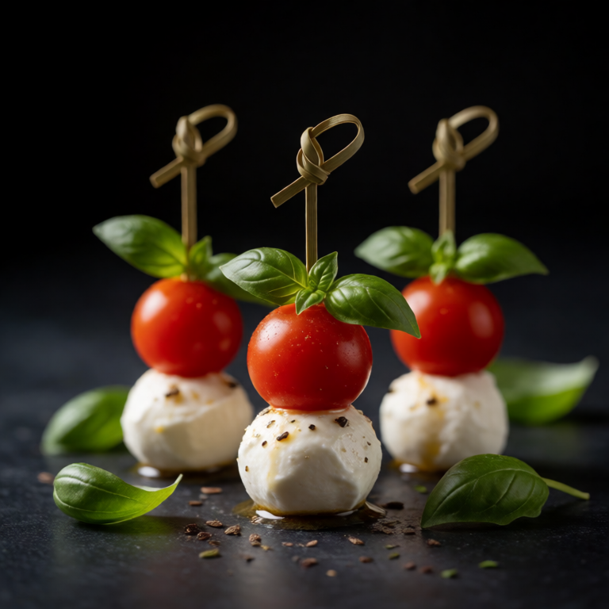

Warm, flaky biscuits studded with sharp cheddar and fresh chives.
At a Glance
Prep
10m
Cook
15m
Serves
1
Difficulty
Mid
Rate this slopBe the first to rate it.
Ingredients
Method
- 01
Mix dry
In a bowl, whisk together flour, baking powder, and salt. Cut in the cold butter until it resembles coarse crumbs.
- 02
Add wet
Stir in the milk, cheddar, and chives until just combined.
- 03
Bake
Drop spoonfuls onto a baking sheet. Bake at 400F/200C for 12-15 minutes until golden.
Slop Notes
Do not overmix the dough or the biscuits will be tough.
Recipe by foidslop · How we create our recipes
The Weekly Slop
Seven dinners for one, one short note, every Sunday. No life story.
One email every Sunday. Unsubscribe whenever. Double opt-in. See the privacy policy.